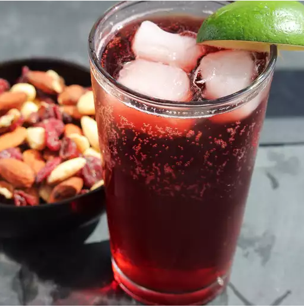

Sparkling Hibiscus Cooler

Sparkling Hibiscus Cooler
This hibiscus cooler is a super refreshing drink on a hot summer day.
Ingredients
- 10 cups water
- 1 cup dried hibiscus petals
- 1 cinnamon stick
- 1 whole clove
- 1 whole allspice berry
- ⅛ teaspoon freshly grated nutmeg
- 1 ½ cups raw sugar
- ice cubes
- 2 ½ (32 ounce) bottles sparkling water
- 2 limes, cut into wedges
Steps
- Combine water, hibiscus petals, cinnamon, clove, allspice, and nutmeg in a medium pot.
Bring to a boil over high heat. Reduce heat and simmer for 1 1/2 hours.li>
- Remove from heat and stir in sugar until dissolved, about 1 minute.
Cool syrup to room temperature, about 1 hour. Refrigerate until ready to use.
- Heat oil in a skillet over medium heat. Cook onion, bell pepper, celery, and garlic in olive oil for 3 to 4 minutes.
- Make hibiscus coolers by filling 10 glasses with ice.
Pour 3 fluid ounces hibiscus syrup into each glass;
top with 8 fluid ounces sparkling water. Squeeze 1 lime wedge into each glass.